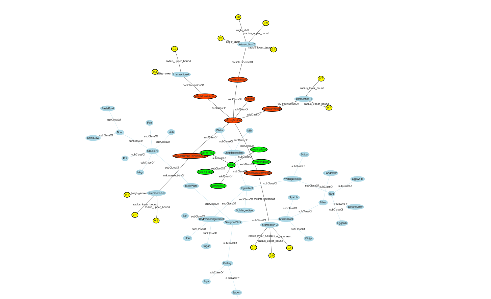

Welcome to our Ontology Visualization Tool Framework. Understanding complex relationships and connections within vast sets of information is crucial in today's data-driven world.
Our Knowledge Graph Visualization Tool empowers users to explore, analyze, and comprehend intricate networks of interconnected data in an intuitive and interactive manner.
With our tool, you can transform raw data into dynamic visual representations.
Navigate through your knowledge graph effortlessly by constructing and executing queries. Whether you're seeking specific relationships or exploring broader connections, our intuitive query builder allows you to refine your search criteria and retrieve relevant information efficiently.
Highlighting key nodes and relationships within your knowledge graph provides valuable insights and facilitates deeper analysis. Our tool enables you to emphasize important elements, making it easier to identify patterns, trends, and dependencies.